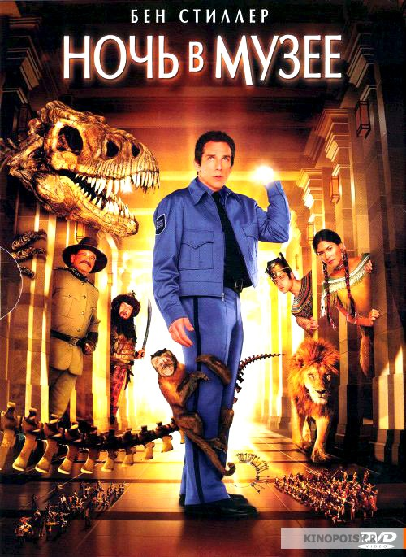

Тоня против всех
Белокурая чемпионка Тоня Хардинг вот-вот подпишет на дело двух идиотов. На нее начнут охоту папарацци и лучшие агенты ФБР. Но это будет потом, а пока за ней с придыханием следит вся страна. Тоня — гордость нации, без пяти минут член олимпийской сборной по фигурному катанию. Надо лишь избавиться от конкурентки. В ее голове зреет дерзкий план.
Мадам
Богатая пара в Париже собирает гостей на званый ужин. Ждут мэра Лондона и других аристократов, но за столом 13 приборов. И хозяйка, из суеверия, просит служанку присоединиться к трапезе. Мария оказывается за столом инкогнито, и в нее влюбляется богатый коллекционер искусства.
Бриллиантовая рука
Кинороман из жизни контрабандистов с прологом и эпилогом. В южном городке орудует шайка «валютчиков», возглавляемая Шефом и его помощником Графом. Скромный советский служащий и примерный семьянин Семен Семеныч Горбунков отправляется в зарубежный круиз на теплоходе, на котором также плывет Граф, который должен забрать бриллианты в одном из восточных городов и провезти их в загипсованной руке. Но в силу недоразумения вместо жулика на условленном месте падает ничего не подозревающий Семен Семенович и драгоценный гипс накладывают ему. Вот тут-то все и начинается…
Елки 5
В этот новый год любимые герои «Ёлок» всё также делают глупости и надеются на чудо. Боре нужно как-то восстановить семейное счастье и ради этого он готов украсть у лучшего друга Жени пингвина. Лыжник и Сноубордист, так и не повзрослевшие, устраивают сумасшедшую погоню за ёлкой. Баба Маня осваивает интернет в надежде найти старую любовь. Профессор из Екатеринбурга остепенился, но теперь сам сходит с ума от ревности. На далеком Севере инженер по технике безопасности должен рискнуть и, наконец, признаться в любви. Ну а пингвину просто очень нужно сесть на яйцо…

Ночь в музее
Главный герой, Ларри Дэйли, отчаявшись найти работу и будучи поставленным перед перспективой больше не видеться со своим сыном, устраивается ночным охранником в Музей естественной истории. Запретить видеться с сыном хотела бывшая жена Ларри, считавшая, что общение с отцом, не имеющим работы и все время меняющим съемное жилье, так как отовсюду его выгоняют за неуплату, повредит развитию сына.
 Корзина
Корзина